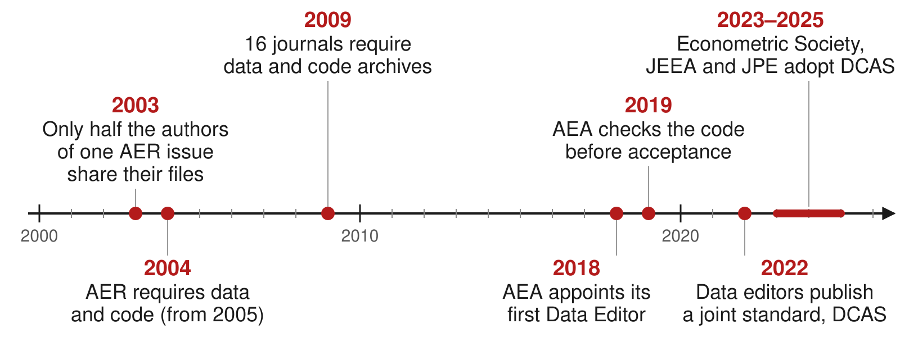
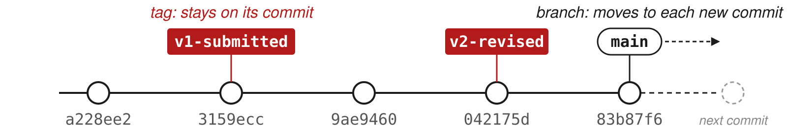

AEM 6850
Empirical Methods for Applied Economists
Prof. Ariel Ortiz-Bobea
11 · Reproducible projects
Thursday, October 1, 2026

Objectives
By the end of this session you can:
- Explain why reproducibility matters.
- Define reproducibility and replicability.
- Explain what economics journals require of data and code.
- Write a README from the data editors’ template.
- Record package versions with
renv. - Tag the code version you submit to a journal.
- Archive a release of the code with a DOI.
- Check every number in a draft against the code with Claude Code.
- Have R write the numbers and tables into a paper.
- Format tables and figures to the AER style guide.
Plan for today
- Why reproducibility matters and what journals require
Why it matters, with two examples · reproducibility versus replicability · journal policies · the AEA’s checks - The replication package
Contents and README · data availability · package versions with renv · a test on another computer · submitting homework - GitHub and DOIs for replication packages
Git tags for submitted versions · publishing only the tagged version · the AEA deposit · DOIs · licenses - Linking numbers, tables and figures to the paper
Numbers from many places · Claude Code traces them (live) · a better way: R writes them, and Claude Code converts the draft · formats for journals
1 · Why reproducibility matters and what journals require
- Why reproducibility matters, with two examples
- Reproducibility versus replicability
- Journal policies on data and code
- Policies at AJAE, JAERE and JEEM
- The AEA Data Editor’s checks
Why reproducibility matters
- Errors in published work are common: “a commonplace rather than a rare occurrence”, in a 1986 attempt to rerun articles from one journal.
- Many results do not reproduce from the authors’ own files: 22 of 67 papers in 13 journals; 68 of 152 AEJ: Applied packages in full.
- Others can check and build on the work. Without the data and code, they take it on trust.
- You will rerun it yourself. Gentzkow and Shapiro reran an early draft of their own paper: the code no longer ran, and once fixed it gave different results.
- Journals require it. AEA journals rerun the code before acceptance.
Sources: Dewald, Thursby and Anderson (AER, 1986); Chang and Li (CFR, 2022); Herbert, Kingi, Stanchi and Vilhuber (CJE, 2024); Gentzkow and Shapiro (guide, 2014).
An error in a paper on abortion and crime
- The claim. Donohue and Levitt (QJE, 2001): legalized abortion in the 1970s explains up to half of the fall in US crime in the 1990s.
- The check. Foote and Goetz (QJE, 2008) reran the authors’ posted data and code: the state-by-year controls the paper describes for its last table were not in the code.
- What changed. With the controls, the effects on arrests fell by more than half; with arrests per person, to about zero.
- The reply. Donohue and Levitt (QJE, 2008) accepted the error and argued that better abortion data restore the result.
Takeaway: the error was found because the authors had posted their data and code.
Sources: Donohue and Levitt (QJE, 2001); Foote and Goetz (QJE, 2008); Donohue and Levitt (QJE, 2008).
An error in a paper on Social Security and saving
- The claim. Feldstein (JPE, 1974): in US data for 1929–71, Social Security wealth reduced personal saving (coefficient 0.021, standard error 0.006).
- The check. Leimer and Lesnoy (JPE, 1982) found a bug in the program that built the wealth series: a loop for survivors’ benefits did not reset each year, so the series grew too fast.
- What changed. On the same data, fixing the bug moved the estimate from 0.024 to 0.015 (0.010); with data to 1976, to 0.002 (0.011).
- The reply. Feldstein (JPE, 1982) accepted the bug and argued that adding the 1972 benefit increase restores about 0.017.
Takeaway: the bug sat in the program that built a variable, where only someone rebuilding that variable could find it.
Sources: Feldstein (JPE, 1974); Leimer and Lesnoy (JPE, 1982); Feldstein (JPE, 1982), with the numbers in its working paper, Table 1.
Reproducibility versus replicability
- Reproducibility: “obtaining consistent results using the same input data; computational steps, methods, and code; and conditions of analysis.”
- Replicability: “obtaining consistent results across studies aimed at answering the same scientific question, each of which has obtained its own data.”
- Example: a paper’s code, run on its data, returns every number in the paper (reproducibility). A new study with other data finds the same relationship (replicability).
- Usage in economics varies. Journals call the files a replication package; what they check is reproducibility, the subject of this session.
Source of the definitions: National Academies (report, 2019), p. 6.
Journal policies on data and code

Sources: McCullough and Vinod (AER, 2003); Bernanke (AER, 2004); McCullough (EAP, 2009); AEA policy; datacodestandard.org.
Policies at AJAE, JAERE and JEEM
| Journal | Asks for | When | Checked before publication |
|---|---|---|---|
| AJAE | Data and a README; code where needed | At acceptance | No data editor; partial compliance accepted |
| JAERE | Data, code, output and a README, on its Dataverse | After conditional acceptance | An editor checks the package against a checklist |
| JEEM | Data and code in a repository, cited in the paper, or a statement of why not | Not stated | Not stated |
- None of the three policies says the code is rerun before publication.
- JAERE asks for output files named as in the paper:
Table1.tex,intextresults.log.
Sources: AJAE author guidelines; JAERE data availability policy; JEEM guide for authors, “Research data”.
The AEA Data Editor’s checks
- AEA journals require the replication package before final acceptance. The Data Editor’s team runs the code and compares its output with the tables, figures and numbers in the paper.
- December 2024 to November 2025, 382 papers at conditional acceptance: 20 accepted as submitted; 285 accepted with changes the authors had to make; 77 sent back for another round of revisions.
- A common problem, in the report for 2022–23: “many authors still manually save figures and copy tables”.
Sources: the AEA policy; Vilhuber (AER P&P, 2026), Table 2.
Takeaway: about 1 paper in 19 passes the Data Editor’s check with no changes.
2 · The replication package
- What a package contains, and the README
- Data availability and restricted data
- Package versions with renv
- A test run on another computer
- Submitting homework the same way
What a replication package contains
A replication package is the data, code and README published with a paper so that others can reproduce its results. Below, a package for a two-page paper on income and life expectancy.
income-life/
├── README.pdf
├── income-life.Rproj
├── renv.lock
├── data/
│ └── gapminder.csv
├── code/
│ ├── run_everything.R
│ ├── 01_table1.R
│ ├── 02_figure1.R
│ └── 03_numbers.R
├── output/
│ ├── table1.tex
│ ├── figure1.pdf
│ └── numbers.tex
└── paper/
└── paper.texREADME.pdf: AEA journals ask for a PDF.data/: the data, or how to get them.run_everything.R: every script, in order.output/: every table, figure and number in the paper.renv.lock: R and package versions.
The sections of a README
| Section | What it says |
|---|---|
| Data availability and provenance | Where each dataset comes from, whether you may share it, how to get it |
| Dataset list | Each data file, its source, and whether it is in the package |
| Computational requirements | Software and versions, random seeds, memory, running time |
| Description of programs | What each script does; the license for the code |
| Instructions to replicators | The steps, in order |
| List of tables and programs | Which script makes each table and figure, and the file it writes |
| References | A citation for every dataset |
Start from the template README written by the data editors of economics journals; the AEA policy says its use “is strongly encouraged”.
The data availability statement
The README section that says who made each dataset, under which license, where your file came from and what you did to it, and whether it is in the package. For the draft project:
The data are the Gapminder excerpt distributed in the R package
gapminder(Bryan 2025, doi:10.32614/CRAN.package.gapminder), released under CC0. The underlying data come from the Gapminder Foundation (gapminder.org/data) under a CC BY 4.0 license. The filedata/gapminder.csvis the package’sgapminderdata frame written withwrite.csv(); it is included in this package.
Replication packages with restricted data
- Restricted data: data you may not redistribute, such as administrative records, licensed firm data, surveys with personal information.
- The package still includes the code, the README and a citation for the data.
- The README says who holds the data, how a researcher applies for access, how long it takes and what it costs.
- It lists the files and variables the code expects, with their exact names, so someone with access can run it.
Recording package versions with renv
- renv is an R package. It gives a project its own package library and a lockfile,
renv.lock, that lists the R version and each package’s version. renv::init(): creates the project library and writesrenv.lock.renv::snapshot(): after you install or update a package, records the change in the lockfile.renv::restore(): on another computer, installs the versions the lockfile names.renv::status(): says whether the lockfile and the library agree.- Commit
renv.lock,.Rprofile,renv/activate.Randrenv/settings.json. renv writes its own.gitignore, which keeps the library folder out.
The contents of renv.lock
- From a project whose script loads gapminder: the R version, the repository the packages came from, and each package’s version.
- renv records the R version but does not install it.
Other ways to control package versions
| Approach | What it fixes | What it leaves open |
|---|---|---|
library() calls at the top of the script |
Nothing: the script stops if a package is missing | Which version is installed |
| Install the missing packages, then load them | Every package is installed | The version: it installs the newest |
remotes::install_version("gapminder", "1.0.1") |
One package’s version | The versions of the packages it needs |
| renv | Every package’s version, listed in renv.lock |
The R version, the operating system |
| A dated copy of CRAN, from Posit Package Manager | Every package as CRAN had it on that day | The R version, the operating system |
| A Docker image | The operating system, R and every package | Needs Docker on the computer that runs it |
- The
checkpointpackage used dated copies of CRAN kept by Microsoft. Microsoft closed that service on July 1, 2023, andcheckpointno longer works.
Running the package on another computer
- Copy the project to a place where the code never ran: a new clone in a new folder, a lab computer, a classmate’s laptop.
- Follow only the README. Add to the README anything you needed that it does not say.
- Run
code/run_everything.Rfrom start to end with no manual steps. Compare every table, figure and number with the paper.
Submitting homework as a small replication package
- The grader opens your homework repository in a fresh R session and sources
code/run_everything.R. Nothing else. run_everything.Rruns the numbered scripts incode/in order.- The scripts read or download the data and write every figure, table and number to a file.
- Paths start at the project folder:
"data/...", never"/Users/you/...". - A short README says what each script does and what it writes.
- Before you submit, clone your repository into a new folder, restart R, and source
run_everything.Rthere. - Do not commit
data/ordata_clean/: the code rebuilds them. The last commit onmainat the deadline is the one graded.
3 · GitHub and DOIs for replication packages
- Git tags for submitted and revised versions
- Making only the tagged version public
- Depositing the package at an AEA journal
- Archiving a release with a DOI
- Licenses and citation files
Why tag the version you submit
- After you submit, the code keeps changing. Referees’ questions, and the journal’s check at acceptance, concern the version you sent.

- A commit is known by its hash,
3159ecc. A tag gives it a name that stays put,v1-submitted; the branchmainmoves on. - A tag changes no file. It shows in
git log --decorateand in GitHub’s list of tags.
Tagging the version you submit
-amakes an annotated tag: it records who made it, when, and the message.git pushalone does not send tags to GitHub; push each tag by name.- Referees rarely run the code. The tag lets you rerun the submitted version when a referee asks about one of its results.
- At acceptance, tag the version you deposit and name the tag in its README.
Working on the project during revisions
git log --oneline --decorate
#> 83b87f6 (HEAD -> main) README: add the list of tables and programs
#> 042175d (tag: v2-revised) Referee 2: describe the fitted line in the figure note
#> 9ae9460 Write the numbers in the text from code/03_numbers.R
#> 3159ecc (tag: v1-submitted) Correct five numbers in the text and Table 1
#> a228ee2 Draft: data, Table 1 and Figure 1 scripts, paper- A project’s history after one submission and one revision, made for this session. Each version sent has a tag; work goes on in
main. git diff --stat v1-submitted v2-revised: the files that changed between the two versions, for the response to the referees.git switch --detach v1-submitted: the folder as it was when you submitted, to rerun it.git switch mainreturns to the newest commit.
When to make a GitHub repository public
- While you work: a private GitHub repository, shared with your co-authors.
- AEA journals require the replication package at conditional acceptance, deposited in an open archive. The archive publishes it before the article.
- The code must be public even when the data cannot be.
- You may make the GitHub repository public earlier, for example when the working paper goes online.
- Never commit to any repository, private or public: confidential data, data you have no right to publish, personal information, passwords, API keys.
Making only the tagged version public
- GitHub sets visibility for a whole repository; a tag cannot be public on its own.
- A public repository shows every past commit, including files you deleted later.
git archivewrites the files at a tag to a zip, with no history:
- The zip holds only files git tracks; add data kept out of git by hand.
- Upload the zip to Zenodo or the journal’s archive, or commit it to a new public repository. The working repository stays private.
Submitting the package to an AEA journal
- The package does not go through GitHub. At conditional acceptance you deposit it in the AEA Data and Code Repository at openICPSR.
- Import the zip from
git archiveinto the deposit, so the deposit lists every file. - The GitHub repository can be linked from the deposit as related material.
- The Data Editor’s team runs the package from the deposit.
- The deposit’s DOI,
10.3886/E…V…, works once the deposit is published, at the end of review.
Source: the AEA Data Editor’s guidance on the deposit.
Archiving a release with a DOI
- The owner of a GitHub repository can rename, change or delete it at any time. Journals do not accept a GitHub link as the archive.
- A DOI (digital object identifier) is a permanent link,
https://doi.org/..., to one archived copy of the files. - AEA journals: the AEA Data and Code Repository at openICPSR, or another trusted archive such as Zenodo.
- Zenodo archives each release of a public GitHub repository and gives it its own DOI, plus one DOI that always resolves to the newest release.
- Cite the DOI of the release the paper used. Example, the
gapminderpackage’s releases: doi.org/10.5281/zenodo.594018.
A license and a citation file
- A license says what others may do with your files. The AEA suggests the modified BSD license for code and CC BY 4.0 for data and documents.
- Data you got from someone else keep their own license; the README says which.
- A
CITATION.cfffile at the top of the repository adds a “Cite this repository” link on GitHub, and Zenodo reads it when it archives a release.
4 · Linking numbers, tables and figures to the paper
- The numbers in a paper come from many places
- Claude Code can find every number and trace it (live)
- A better way: R writes the numbers and tables into the paper, in Quarto or LaTeX
- Claude Code can convert the draft to Quarto (live)
- Table and figure formats for journals
The numbers in a paper come from many places
![Three sources on the left: R's Console, with nothing saved; output/table1.csv; and output/figure1.pdf. On the right, the paper draft.tex with five parts: Abstract (49.1, 67.0, 0.73), Results (39.6, 82.6, 42.8, 14.9 and more), Table 1 (rows such as 52, 54.8, 1,452), Figure 1, and the Note under it (Gapminder, 2002). Dashed red arrows marked typed by hand run from the Console to the Abstract, the Results and Table 1, and from table1.csv to Table 1. A solid arrow marked read from the file runs from figure1.pdf to Figure 1.](figures/11-reproducible-project/D7-number-sources.svg)
- The draft has 35 numbers typed by hand. When the code changes, each one has to be found, traced to its source and retyped, which is slow and error prone.
A draft written for this session: the paper (PDF) · the project (zip).
Running Claude Code on the draft project
- Download the project, a zip file, and unzip it into the folder where you keep projects, such as
~/github/ - Open a terminal in the project folder: in RStudio, open
income-life-draft.Rproj, then Tools → Terminal → New Terminal; or in Terminal,cd ~/github/income-life-draft - Type
claude. The first time, choose Yes, I trust this folder. If it says the login expired, type/login - Paste a prompt: the number check on the next slide, or the conversion to Quarto a few slides later
- Read each command it proposes before you approve it (option 2 approves that command for the rest of the session)
- When it finishes, open the files it names
Needs: R; Quarto, with LaTeX for PDF output (quarto install tinytex in a terminal, once); Claude Code, installed and logged in.
Claude Code can find every number and trace it
Prompt to paste into Claude Code
Read paper/draft.pdf. Check every number in it that reports a result:
in the text, in Table 1, and in the notes under the table and the
figure. For each number, find the script in code/ that computes it. If
no script computes it, compute it from data/gapminder.csv with R. Then
list only the numbers that disagree with the code or the data: the
number as printed, where it appears, and the value you get. End with how
many numbers you checked. Do not change any file.- Live: it reads the PDF, the scripts and the data, recomputes each number, and lists the ones that disagree.
Claude Code’s report: six numbers that disagree
Claude Code’s reply in a test run before class, rearranged into a table:
| As printed | Where | What the code or data give |
|---|---|---|
| 0.73 more years per 10% | Abstract | 0.69 (7.203 × log 1.1); 0.72 if taken as 7.203 × 0.1 |
| 42.8 years | Results, first paragraph | 43.0 (82.603 − 39.613) |
| 69.2 (Asia) | Table 1 | 70.7, from 01_table1.R and table1.csv |
| 28,504 (Europe) | Table 1 | 28,054: two digits swapped |
| 0.73 | Results, third paragraph | the same as the abstract |
| Gapminder, 2002 | Note under Figure 1 | 2007: the figure plots 2007 |
- 35 numbers checked; 6 disagree: five errors, since 0.73 appears twice. Recompute each before you edit the paper.
- A better way: have the code write every number into the paper, so none is typed by hand.
Two ways to have R write the numbers into a paper
- Quarto (installed with RStudio). The text and the R code sit in one
.qmdfile. Rendering runs the code, puts each computed value into the text, and writes an HTML, PDF or Word file. - LaTeX with generated files. The paper stays a
.texfile. R scripts write each table to a.texfile and each number in the text to a file of LaTeX macros. The paper reads those files with\input. - In both, each number is computed in one place, the code. Run the code again, render or compile, and the paper shows the new values.
Asking Claude Code to convert the draft to Quarto
Prompt to paste into Claude Code
Convert paper/draft.tex into a Quarto document, paper/paper.qmd, that
renders to PDF. Every number in the text, the table and the notes must
come from R code that reads data/gapminder.csv or the files in output/;
type none by hand. Build Table 1 from output/table1.csv with
knitr::kable, and include output/figure1.pdf as Figure 1. Keep the
wording; do not try to match the layout. Render it. Then list every
number that differs from paper/draft.pdf. Do not change any other file.- In a test run before class (about two minutes), it wrote
paper/paper.qmd, renderedpaper/paper.pdf, and listed the five stale numbers with their new values. - The one number the data cannot give, the 10 in “10 percent”, it set once in the code:
pct <- 10.
The Results paragraph in paper.qmd
- Each
`r ...`is computed in one R chunk at the top of the file, fromdata/gapminder.csvandoutput/table1.csv. - Change the data or the code, render again, and every number follows.
- Check what it wrote: outside
`r ...`, the only digits left should be in the references.
The three parts of a Quarto document
Top to bottom: the header, an R code chunk, text with inline R code. Rendered, the last two lines read: “In 2007, life expectancy was lowest in Swaziland, at 39.6 years.”
Inline R code
`r expression`inside a sentence: rendering runs the expression and replaces it with its value.- Compute values in a chunk. Keep inline code to an object name or one short function call.
- Round and format in the code. Three functions, three results:
| Code | Prints |
|---|---|
round(67.00742, 1) |
67 |
sprintf("%.1f", 67.00742) |
67.0 |
format(6124, big.mark = ",") |
6,124 |
Numbered tables and figures, and references to them
```{r}
#| label: tbl-continents
#| tbl-cap: "Countries and life expectancy by continent, 2007"
knitr::kable(table1) # a data frame as a table
```
```{r}
#| label: fig-scatter
#| fig-cap: "Life expectancy and GDP per capita, 2007"
plot(d$gdpPercap, d$lifeExp, log = "x")
```
@tbl-continents reports averages by continent. @fig-scatter plots
life expectancy against income.- A chunk label that starts with
tbl-orfig-makes Quarto number the table or figure, in order. @tbl-continentsin the text prints “Table 1”, linked to the table. Add or reorder tables and the numbers change at the next render.
Rendering a Quarto document
- In RStudio: the Render button above the editor. In the Terminal:
quarto render paper.qmd. format:in the header picks the output:html,pdfordocx. A PDF needs LaTeX; install it once withquarto install tinytexin the Terminal.- Rendering starts a new R session. The document must load its own packages and read its own data: objects in your Console do not exist there.
Exercise 1
# Exercise 1 (5 minutes). RStudio.
#
# 1. File > New File > Text File.
# Paste the text on the right.
# Save As... exercise.qmd
#
# 2. Replace each ___ with inline
# R code, `r ...`: yr,
# low$country, and low$lifeExp
# rounded to one decimal.
#
# 3. Render. Read the sentence.
#
# 4. Change 2007 to 2002 in the
# chunk. Render again.
#
# Two answers to compare with the
# room: the country and the number
# for 2007, and for 2002.A LaTeX paper that reads its numbers from a file
A LaTeX macro is a name that LaTeX replaces with its definition. R writes the definitions to output/numbers.tex:
The paper reads it once, in the preamble, and uses the macros:
Writing numbers.tex from R
# code/03_numbers.R: every number the text quotes
d <- read.csv("data/gapminder.csv")
d07 <- d[d$year == 2007, ]
numbers <- c(
nCountries = length(unique(d$country)),
lifeExpStart = sprintf("%.1f", mean(d$lifeExp[d$year == 1952])),
lifeExpEnd = sprintf("%.1f", mean(d07$lifeExp)),
lifeExpGap = sprintf("%.1f", max(d07$lifeExp) - min(d07$lifeExp))
)
writeLines(sprintf("\\newcommand{\\%s}{%s}", names(numbers), numbers),
"output/numbers.tex")- One named element per number.
sprintf("%.1f", x)prints exactly one decimal. - Macro names may contain letters only:
\lifeExpEndworks,\lifeExp2007does not.
Writing table1.tex from R
The first lines of output/table1.tex, for the draft’s Table 1:
booktabs = TRUE: three horizontal rules, no vertical lines.- In the paper, a
tableenvironment holds the caption, the notes and\input{../output/table1.tex}.
Table rules in the AER style guide
- Tables as text in the paper’s LaTeX or Word file, written by the code.
- Only horizontal lines and blank space to separate the parts of a table; no shading.
- At most 9 columns, the row headings included.
- No abbreviations in column headings.
- A zero before the decimal point: 0.357, not .357.
- No asterisks for significance; standard errors in parentheses.
- Notes below the table; the source note comes after the other notes.
Source: the AER style guide.
Formats, sizes and fonts for figure files
- Charts as vector files, such as PDF or EPS. Photographs, maps and screenshots at 300 dpi.
- Each panel in its own file, lettered:
Figure1a.pdf,Figure1b.pdf. - Saved at the printed size, with text of at least 7 points at that size.
cairo_pdf()embeds the fonts in the file;pdf()does not.
Sources: the AER style guide (formats, dpi, panels); Elsevier’s sizing guidance (7 points).
Practice
Ten exercises on the session page, with solutions behind a click. All of them use the draft project, download it from the page.
- 1–2 The replication package: the README; renv, restored in a copy of the project
- 3–5 GitHub and DOIs: tags for a submitted and a revised version; a GitHub release; a test DOI on the Zenodo sandbox
- 6–10 Linking numbers, tables and figures: the number-check prompt;
numbers.texandtable1.texfrom R; the Results section in Quarto; Figure 1 at one column’s width
Quick reference
Each number in the paper comes from one line of code, and the code writes it into the paper.
The commands, the README sections and the steps to a DOI, one line each, are on the session page.
AEM 6850 · Session 11